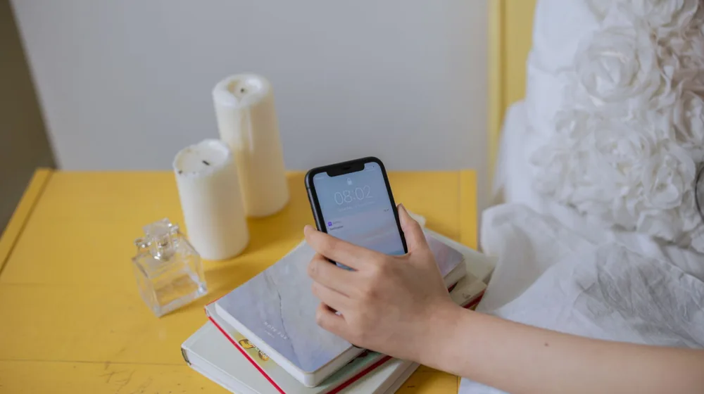

스마트폰 중독 탈출: 실패 없는 디지털 디톡스 4단계 가이드
사진: Erik Mclean / Pexels (무료 이미지, 출처 표기)
스마트폰 화면을 켜고 나도 모르게 SNS를 넘겨보다가 한두 시간이 훌쩍 지나간 경험, 누구나 한 번쯤 있으실 겁니다. 끊임없이 울리는 알림과 자극적인 숏폼 콘텐츠는 뇌의 도파민 체계를 자극해 집중력을 흐트러뜨립니다. 일상에 피로감을 느끼고 업무나 학업에 집중하기 힘들다면 이제는 의식적인 '디지털 디톡스(Digital Detox, 디지털 기기 사용을 중단하고 휴식하는 것)'가 필요한 때입니다.
1. 내 상태는 어떨까? 스마트폰 과의존 자가 진단

과학기술정보통신부와 한국지능정보사회진흥원(NIA)의 스마트폰 과의존 실태조사 기준에 따르면, 일상생활에서 기기 사용 통제력을 잃는 경우가 늘고 있습니다. 무작정 기기를 끄기 전에 먼저 나의 사용 습관을 객관적으로 점검해 보는 것이 좋습니다. 아래 항목 중 3개 이상에 해당한다면 가벼운 디톡스부터 시작할 것을 권장합니다.
- 스마트폰이 없으면 손이 떨리거나 불안하고 초조해진다.
- 스마트폰 사용 시간을 줄이려고 시도했으나 번번이 실패했다.
- 스마트폰을 하느라 공부나 업무에 지장을 받은 적이 있다.
- 화장실에 갈 때나 짧은 이동 시간에도 반드시 스마트폰을 확인한다.
2. 실패 없이 실천하는 디지털 디톡스 4단계 가이드
하루아침에 스마트폰을 아예 쓰지 않겠다는 목표는 실패할 확률이 높습니다. 뇌가 갑작스러운 자극 차단에 반발하기 때문입니다. 일상에서 부담 없이 실천할 수 있는 단계별 접근법을 제안합니다.
- 1단계: 방해 금지 및 무음 설정 - 카카오톡, SNS, 이메일 등 필수적인 연락을 제외한 모든 앱의 푸시 알림을 끕니다. 알림이 울리지 않는 것만으로도 스마트폰을 확인하는 횟수가 크게 줄어듭니다.
- 2단계: 화면 흑백 모드로 전환 - 스마트폰 설정에서 화면을 흑백(Grayscale) 모드로 바꿉니다. 컬러풀하고 자극적인 시각 효과가 사라지면 뇌는 스마트폰을 덜 흥미로운 도구로 인식하게 됩니다.
- 3단계: 물리적 거리 두기 - 일하거나 공부할 때는 스마트폰을 가방 속이나 다른 방에 둡니다. 시야에서 보이지 않게 만드는 것이 의지력을 소모하는 것보다 훨씬 효과적입니다.
- 4단계: 디지털 프리존 설정 - 침대 위나 식탁 등 특정 장소와 시간에는 절대로 스마트폰을 사용하지 않는 규칙을 세웁니다. 특히 수면 1시간 전 스마트폰 사용을 금지하면 수면의 질이 눈에 띄게 좋아집니다.
3. 완충 장치 역할을 해줄 디지털 디톡스 보조 도구 비교
본인의 의지만으로 스마트폰 멀리하기가 어렵다면 적절한 도구의 도움을 받는 것도 현명한 방법입니다. 시중에서 쉽게 구할 수 있는 보조 도구들의 특성을 비교해 보았습니다.
2026년 기준 시중에는 다양한 디자인과 크기의 스마트폰 잠금 상자가 출시되어 있으므로, 본인의 생활 패턴과 예산에 맞춰 선택하시기 바랍니다. 정확한 제품별 규격과 작동 방식은 제조사 상세 페이지를 통해 다시 확인하시길 권장합니다.
4. 디지털 디톡스 시작 시 주의할 점과 팁
가장 흔히 하는 실수는 무리한 계획을 세웠다가 작심삼일로 끝나는 것입니다. 스마트폰을 멀리하면서 생긴 빈 시간에 무엇을 할지 미리 정해두지 않으면, 결국 지루함을 견디지 못하고 다시 스마트폰을 쥐게 됩니다. 독서, 일기 쓰기, 산책, 가벼운 스트레칭 등 대체할 수 있는 오프라인 활동을 미리 준비해 두세요.
또한 주변 사람들에게 "이 시간에는 연락이 늦을 수 있다"고 미리 양해를 구해두는 것이 좋습니다. 연락 두절에 대한 불안감을 낮추고 타인의 이해를 얻으면 심리적으로 훨씬 편안하게 디톡스에 집중할 수 있습니다.
🔗 이 글도 함께 보면 좋아요: 집들이 요리 메뉴 추천: 실패 없는 4단계 맞춤 식단 짜기
관련 추천 상품
이 포스팅은 쿠팡 파트너스 활동의 일환으로, 이에 따른 일정액의 수수료를 제공받습니다.
한눈에 보는 상품 목록
스마트폰 타이머 잠금상자
스마트폰 보관 파우치